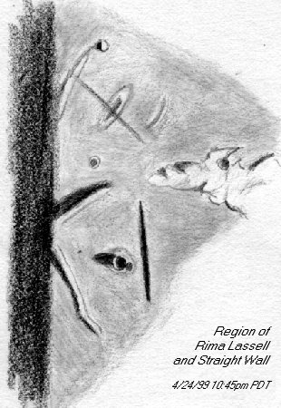

SJAA
Ephemeris
|
SJAA Ephemeris |
Short-lived Lunar Views: The Lassell StripeAkkana Peck |
On Saturday night, April 24, at the SJAA public Houge Park star party, a few of us were idly cruising the terminator in preparation for shutting down for the night, when David North commented on an odd dark line near the Straight Wall. "I don't think I've ever seen that before", he said. I took a look, and neither had I, though we both have looked at the area of the Straight Wall at sunrise quite a few times.
The line, just as straight as the Straight Wall and longer, but thicker and seeming not as dark (looking like the shadow of a wrinkle ridge), angled west from the north end of the straight wall, at its halfway point crossing an odd oval object which looked like nothing I had seen before.
We checked Rukl, but there was no hint in his atlas of either the dark stripe or the oval area; he shows wrinkle ridges running orthogonal to the stripe, but not meeting in a way which seemed likely to explain the oval area.
|  |
Our first Transient Lunar Phenomenon (TLP)! I made a sketch of the area (see attached). I used my VX102 refractor, but after scanning I flipped the image digitally so the orientation should match a chart or a reflector view. The straight wall is the vertical dark gash near the bottom center of the sketch, with Birt and Birt A to its left; the stripe and the oval area are above. The crater Lassell is not shown, but would be just off to the upper right.
The stripe was already fading by the time I finished my sketch at 11:15; it seemed to be a very short-lived phenomenon.
After heading home, we checked the Times Atlas (which is much more detailed than Rukl); it showed Rima Lassell (not mentioned in Rukl) in that area and heading the right direction, but the rille is a very small, fine feature which doesn't seem to explain the prominent dark stripe we had seen.
Off to search other references. The Kopal "atlas" (really just a random collection of nice photos) has one shot of the straight wall area, but the terminator is well past the position where we saw it and there's no hint of the Lassell stripe. But Harold Hill's "A Portfolio of Lunar Drawings" (my favorite moon book! Hill has a wonderful eye for lovely scenes as well as a beautiful drawing technique) mentioned "Lassell and environs" in the table of contents, so I eagerly flipped forward to pages 102-3. There I found three sketches (in addition to Hill's own, he includes a sketch by T.S. Elger from a British publication The Moon, and another by W.L. Rae from a later issue of the same publication confirming Elger's observation) looking almost exactly like my own! Elger first observed this phenomenon on January 13, 1886, and called it "a long straight dark line ... In its course it traverses a curious curved oval-shaped ring ... The object resembles a fault, or the shadow of a steep ridge."
Hill believes the line to be a fault, because at one point he was able to make out a break in the wall of the line as it crosses the north wall of the oval.
I was amazed at how short-lived this apparition was, and at how invisible it becomes when the light isn't just right. I look forward to looking again for the Lassell stripe in future months.
| Akkana Peck; last updated: February 05, 2002 | Prev Next |